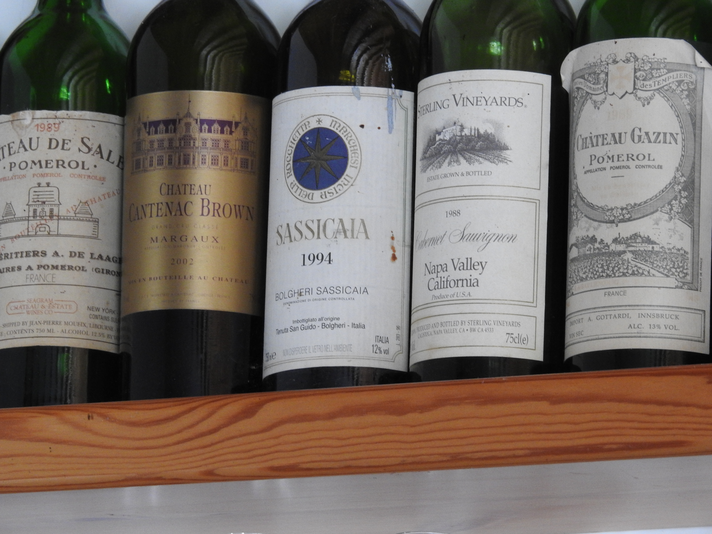

Why wine will always taste better with a decent cheese platter?
Side notes

Why, oh why would it taste better? Or worse? To be honest it is not entirely my point. I do like my cheese
washed down with a glass of wine myself. But…
The other day I have read this article in the The Daily Telegraph about cheese and wine. It raised some
questions at least about how accurately the experiment and details of the experiment were described in it. The
article says a research have been carried out by 31 wine experts sampling 4 cheeses and 4 wines.
First and foremost, the question of experts. Just to see what study and what not, I have googled about a bit.
You do not have to go far to find that those experts in other posts were in fact volunteers who actually like
wine or drink wine in their private life. I do not mean to be elitist but naming them experts gives some false
weight to make a point.
The tasted cheeses were: a semi-hard cow`s milk Comte, a soft, washed rind, cow`s milk Epoisses, a blue,
sheep`s milk Roquefort and a hard goat`s cheese Crottin de Chavignol. The wines were according to the article
a sweet Pacherenc, a dry Sancerre, a full-bodied Bourgogne, and a fruitier Madiran.
Pacherenc du Vic-Bilh AC is from the South-West Wine Region in France covering the same area as Madiran AC.
Its white grapes varieties are mostly the indigenous Petit Manseng, Gros Manseng, Courbu, Arrufiac and
Semillon. It can produce, dry, sweet or sparkling wines too. Because of the lack of botrytis for some sweet
wines the grapes can undergo passerilage, a kind of drying process. These wines do not necessarily come cheap
though.
Sancerre is from the Central vineyards of the Loire and Sauvignon Blanc and typically dry.
Then a full-bodied Bourgogne. At first I thought that would be a Chardonnay, as Pinot Noir in Burgundy tends
to be fuller-bodied or the fullest bodied in its best examples from the Côte de Nuits. That narrow band of
handful of vineyards give us the most expensive wines on the world. Vosne-Romanėe-Conti, La Tȃche,
Gevrey-Chambertin. Do they ring a bell? Mostly Pinot Noir is light or medium bodied, when young they have
fruity fragrance and light tannins. In other posts the Burgundy was called a spicier red. Well, that can be a
much cheaper price range.
Than at last, a fruitier Madiran. Well, Madiran can be made of 100% Tannat, which is a black grape variety and
famously tough. It is so tannic that several wine making techniques being used and one was purposefully
developed to soften wine made out of Tannat. One of the methods is blending. Blending with Cabrenet Sauvignon,
Cabrenet Franc and a local variety called Fer. Imagine a wine which can be softened by adding Caberenet
Sauvignon. They use destemming, gentle pressing, new oak barrels, prolonged bottle ageing, micro-oxidisation
and the result can be a concentrated, fruitier wine with riper tannins. It is not unlike a higher-end
Bordeaux.
So these wines are not just any wines, but the description of them is rather vague and misleading. Or just has
forgotten to check the correct terms? In other articles the selection of wines was described slightly
differently too. So possibly the volunteers tasted some world class, rather expensive wine and they found that
if they eat cheese with them, their flavour was enhanced and their enjoyment improved.
The process itself was not exactly pairing or matching at all, more like tasting. This resulted a bold
statement that any cheese probably makes any wine taste better and improves its fruitiness and bouquet. I can
see that it could be true in certain cases, but in almost all!? I must say that is a tall order. I tell you
why. Wine and cheese matching (or not matching) is a tricky business at best. Against popular belief cheese is
not specifically red wine friendly. I know, port. But port is rather lucky for being fruity, sweet and high in
alcohol. It does not mean though, that it goes very well with just any cheese. It all depends on texture,
weight the presence of umami and the counter-acting effect of salt and acidity. White wine works so much
better in many cases. Umami is a distinctively savoury taste that makes tannic wines to taste even harsher,
makes it more astringent and bitter. A rich, ripe, pungent soft cheese like Epoisses which is high in umami is
a kind of faux pas to pair with a Madiran. A Burgundy would work better, but to be honest I would not bother
with red at all. Go with a flavoursome, fruity Sauterne or even Pacherenc.
Rich and creamy texture has a mouth-coating effect that impairs your sense of taste. That comes up as a
positive consequence in the article. It appears to be as a very much welcomed lubrication, a help of
counter-balancing the astringent tannins. As far as I can see it is not improving the flavour, more like
masking it. Like I do not like every cheese and certain wines are just not my cup of tea, but I would not pour
a glass of lemonade into my young Bordeaux just to make it more palatable.
I very much appreciate studies about wine and food because they are making us understand more about the
interactions between food and wine. The study, if you read the more detailed description in the Washington
Post, actually a really interesting one. It gives an exciting angle of understanding how our senses work. I
just think that the wrong conclusion has been emphasised. Even the researchers say, they have not come to a
final assumption. So probably any cheese can be improved by any wine? No ultimate decision has been reached.
26.12.2018.